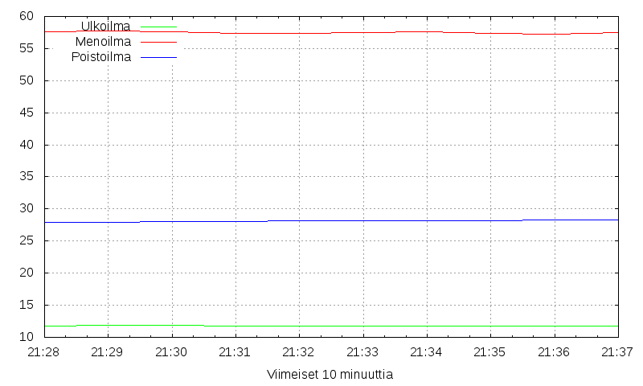
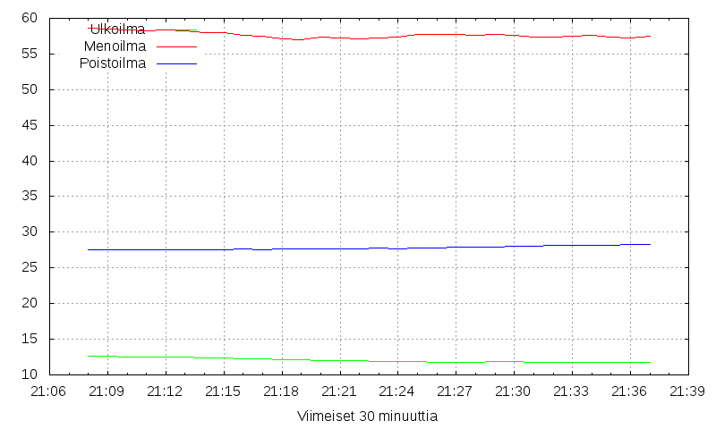
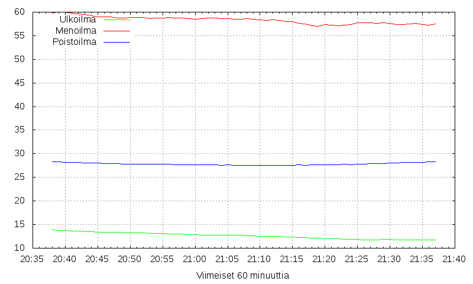
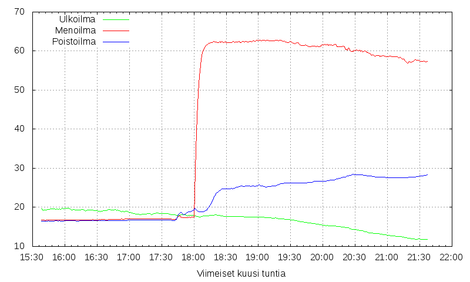
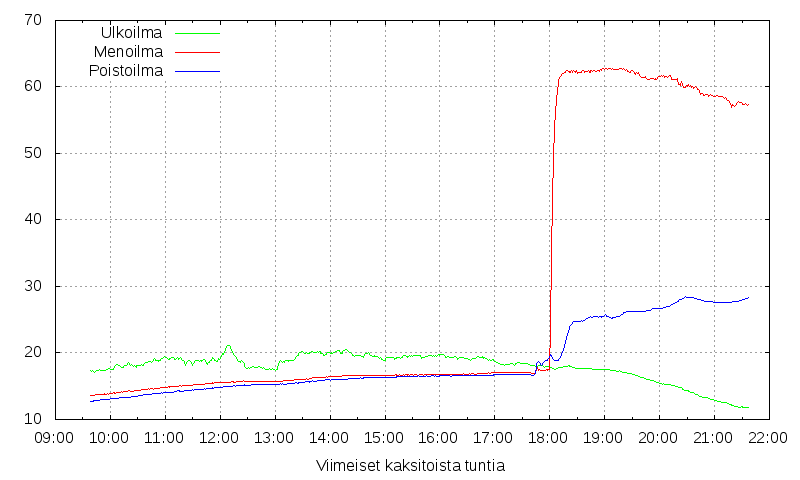
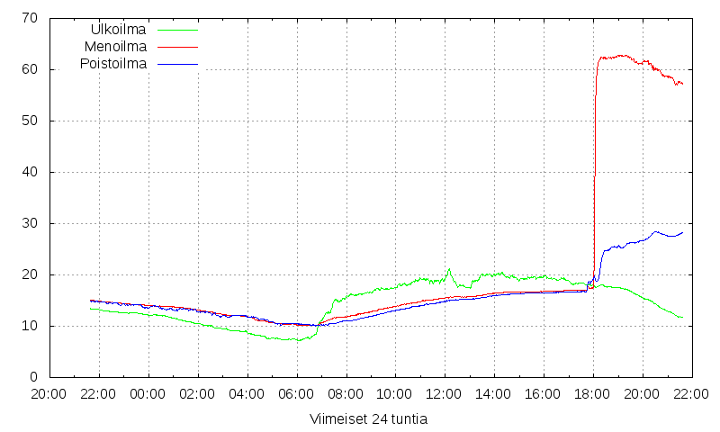

2018-08-27 21:37:07






Aika
Ulkoilma
Menoilma
Poistoilma
Jatkuvuus
Kehitys 60 minuutin ajalta
10 min
11.8
57.5
28.1
t
2.49
30 min
12.1
57.6
27.8
t
1.61
60 min
12.6
58.3
27.8
t
-0.02
360 min
16.9
43.1
22.4
t
2.64
720 min
17.9
29.3
18.7
t
1.34
1440 min
14.7
20.9
15.5
t
0.52